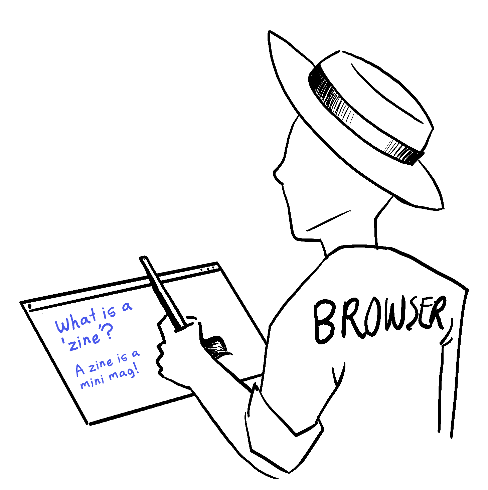

Rendering with React
How React "prints" UI to your screen!
What's a render?
In React, function components are, well, functions!
function News() {
return (
<article>
<h1>What is a 'zine'?</h1>
<p>A zine is a mini mag.</p>
</article>
);
}
When react "renders" a function component, it executes the function and gets a UI tree in return. On the Web, that UI Tree is a collection of DOM nodes.
Initial Render
To take a component from a function to your screen,
React must first render it by calling ReactDOM.render()
on your root component and the target DOM node:
ReactDOM.render(
<News />,
document.getElementById('root')
);
Commit
After React renders your component(s), it will update the DOM to reflect the UI tree. This is called the Commit Phase.
The UI Tree rendered from
<div id='root'>
<article>
<h1>What is a 'zine'?</h1>
<p>A zine is a mini mag.</p>
</article>
</div>
Browser paint
When React updates the DOM, the browser repaints the screen to reflect these updates. Now you can see your component!

Reacting to users with a new Render
If you're making something interactive, you'll need to change how the UI looks in response to
user actions like submitting forms or dragging and dropping!
To update the UI in response to user input, you can tell React to re-render a component!
Re-rendering with setState()
Setting a component's state with setState()* tells React to change the component's state and queues another render—a re-render!
During the Commit phase after re-rendering a component, React will compare the previous render's UI tree to the new one and only update the bits that have changed!
*See Stately State zine.